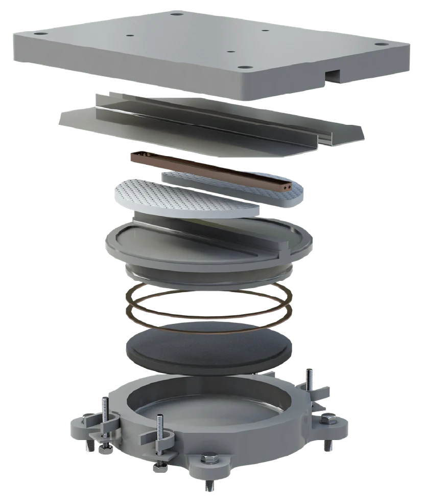
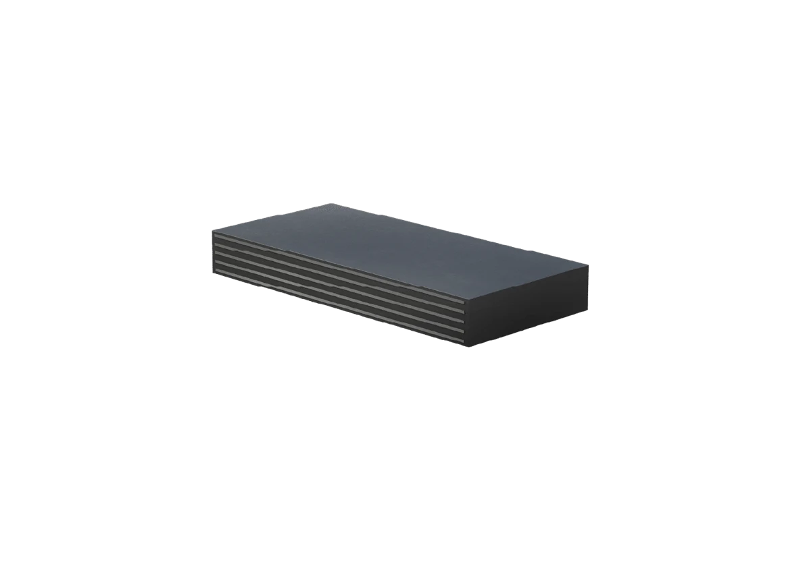
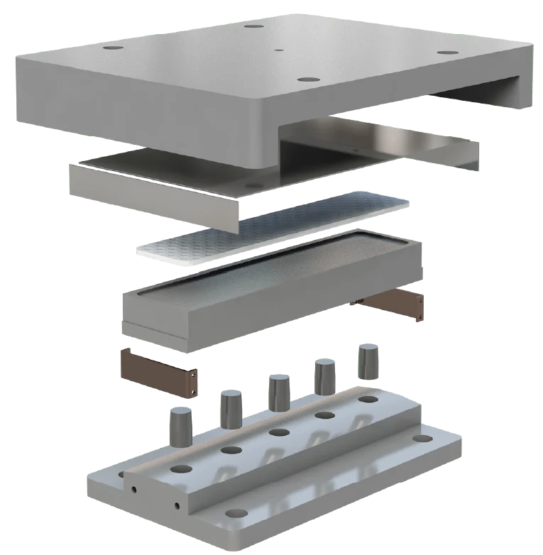
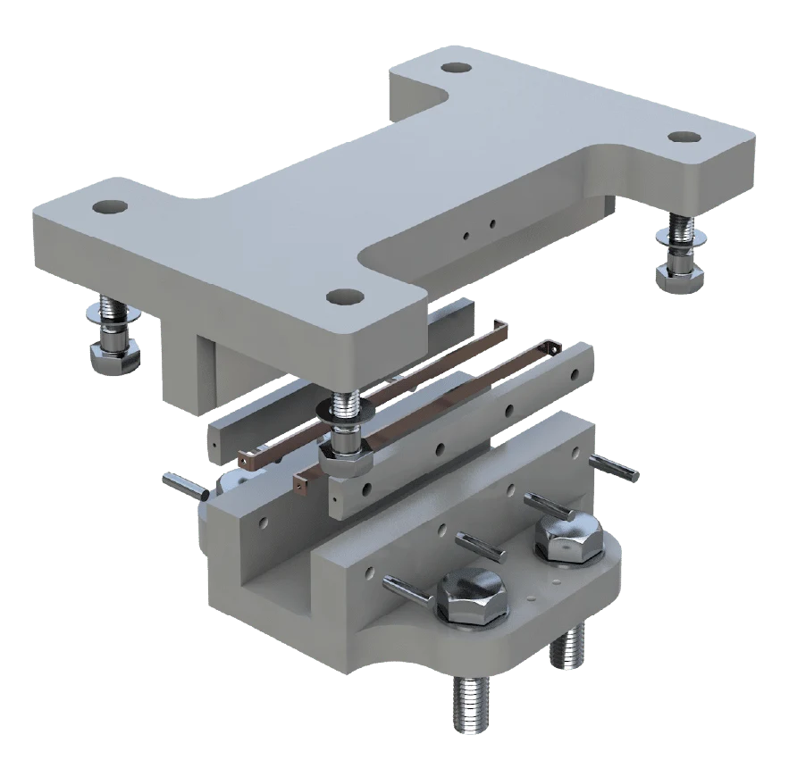
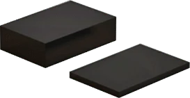
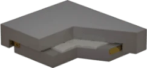
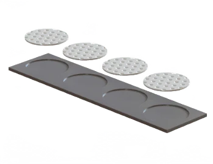
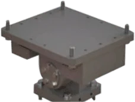

DESIGN / MANUFACTURE / INSTALLATION
Find your
bearing.
Structural, industrial and bespoke solutions. Explore the range or talk to a bearing specialist.

KE / Pot bearings
Load transfer and rotation with fixed, guided or free movement arrangements.
View product overview ↗
GE / Spherical bearings
Spherical bearing arrangements for structural load transfer and rotation.
View product overview ↗
EKE / Elastomeric bearings
Laminated elastomeric bearings for structural movement.
View product overview ↗
DE / Line rocker bearings
Load transfer with rotation about a single axis.
View product overview ↗
FE / Restraint & guide bearings
Horizontal restraint and guidance, used alongside load-bearing supports.
View product overview ↗
EKR / Rubber pad & strip bearings
Pad and strip options for relatively low loads and translations.
View product overview ↗
EA / Sliding bearings
Industrial sliding supports with a choice of movement arrangements.
View product overview ↗
EQF / Sliding bearings
PTFE and stainless-steel sliding supports for industrial movement.
View product overview ↗
Bespoke bearings
Engineered solutions for unusual movement requirements.
View product overview ↗No matching bearings. Try another search or category.
Bring us your next challenge.
Talk to EKSPAN ↗Preparing a bearing enquiry?
Find published resources and the project information to bring to the conversation.
Brochures & downloads ↗